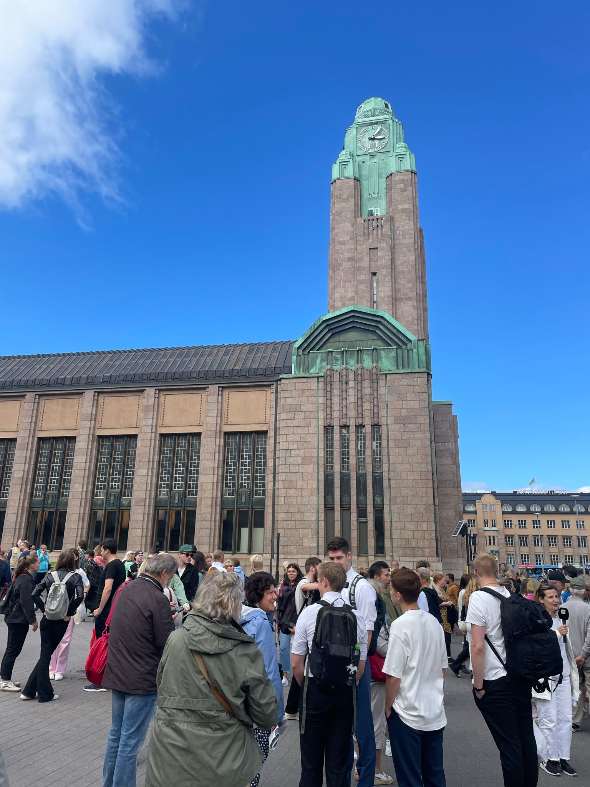

Our Helsinki Tours Include:
- Historical Walking Tours Explore Helsinki's evolution from a modest trading town to a modern Nordic capital. Walk through centuries of history with stories of kings, independence, wars, and everyday life.
- City Bike Tours Cycle through charming neighborhoods, coastal paths, and green parks while learning about local life, culture, and landmarks—all at a relaxed, scenic pace.
- Food Tours Taste your way through Helsinki! Visit local markets, cafes, and street food spots while learning about Finnish culinary traditions and the seasonal ingredients that shape them.
- Architecture & Design Tours From neoclassical gems to functionalist modernism and cutting-edge Nordic design, uncover the architecture that defines Helsinki’s skyline and identity.
- Folklore & Mythology Tours Step into the world of ancient Finnish legends, mythical creatures, and pagan traditions that still echo in the city’s parks, statues, and stories.
- Classic Sightseeing Tours Perfect for first-time visitors, our guided overview of Helsinki’s must-see landmarks includes Senate Square, the Rock Church, the Sibelius Monument, Market Square, and more.
Cook and enjoy traditional Finnish meals over an open fire in the wild.